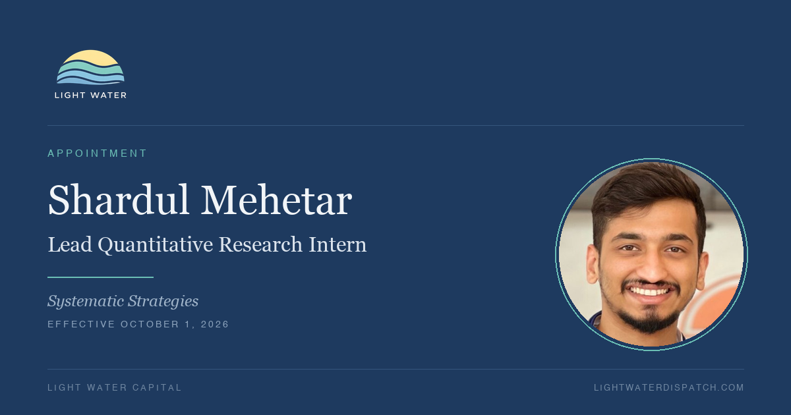

Light Water Capital is pleased to announce that Shardul Mehetar has been named Lead Quantitative Research Intern within the firm's Systematic Strategies group, effective October 1, 2026.
Mr. Mehetar joined the firm in July with a background in credit risk modeling and a disciplined approach to model validation. His work over the past three months has been published in full, and reflects that approach.
Contributions Since July
Strategy evaluation. Together with Zach Smith, Mr. Mehetar co-authored the live RSI-divergence build, in which an initial +444% backtest result was traced almost entirely to two stock-split data artifacts, and the EMA breakout teardown, in which 60 backtests of a single strategy did not produce a win rate better than chance. Both pieces reached negative conclusions, and both materially improved the firm's research process.
Research infrastructure. In July Backtester, the firm's open-source research engine, he implemented the universe liquidity and history screens on a point-in-time basis, refined the price-jump check to weight magnitude rather than frequency, and built tooling that verifies published outputs.
Foundational research. In Before the Strategy, he tested seven market behaviors underlying the firm's strategies, each against its own null hypothesis. None of 155 tests of correlation and dispersion persistence survived a correction for overlapping windows, and he withdrew prior findings accordingly. He also identified eighteen defects in the firm's tooling, ten of which would have produced incorrect results without raising an error.
Recognition
The designation reflects the quality and transparency of his work rather than any single result, several of his most useful findings having been negative. He documents his methodology in full, reports findings that did not hold, and identifies weaknesses in the firm's own process before they reach live capital. These are the standards the research group aims to uphold.
The firm congratulates Mr. Mehetar and looks forward to his continued contributions.
Leave a comment - join the conversation
Share your thoughts, questions, or insights on this article. We'd love to hear your perspective.
Comment on LinkedIn